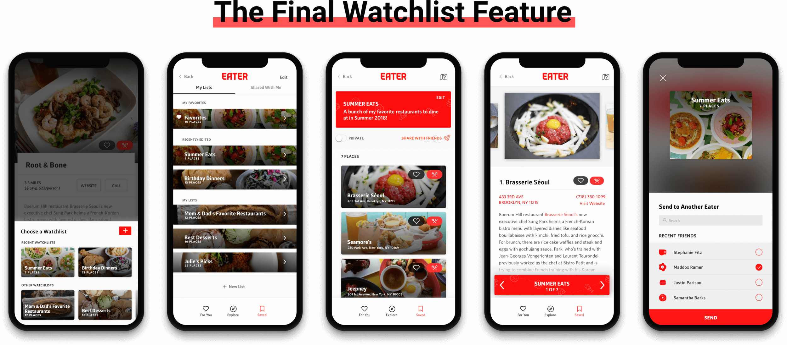
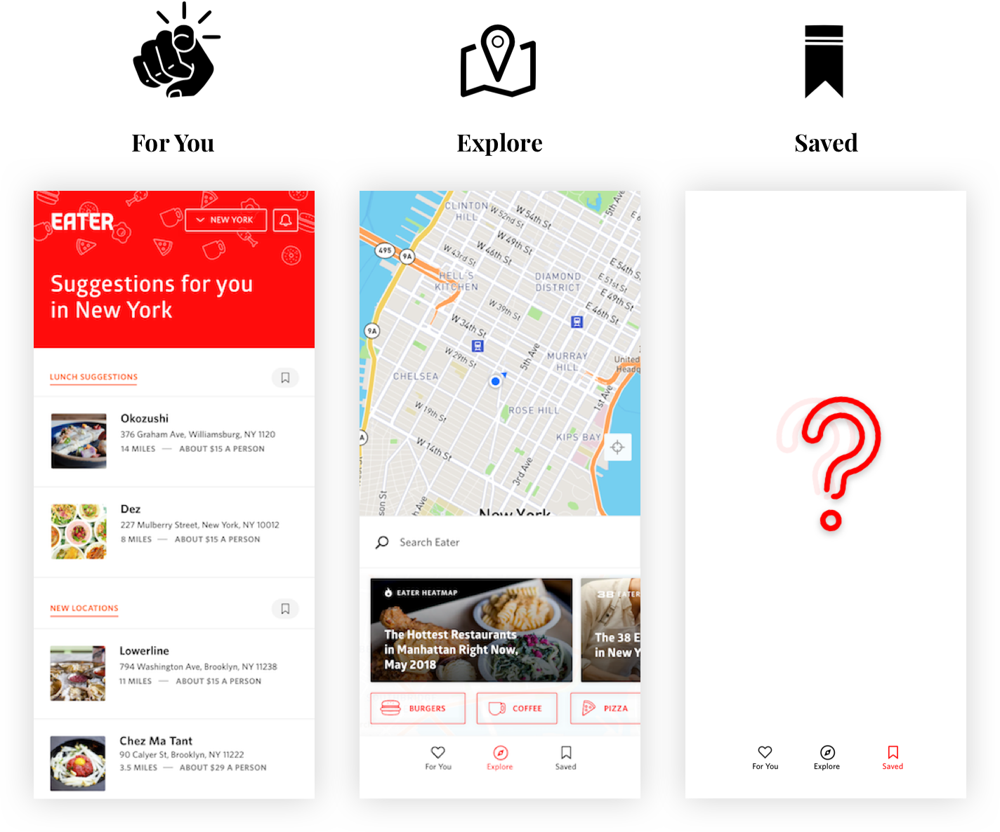
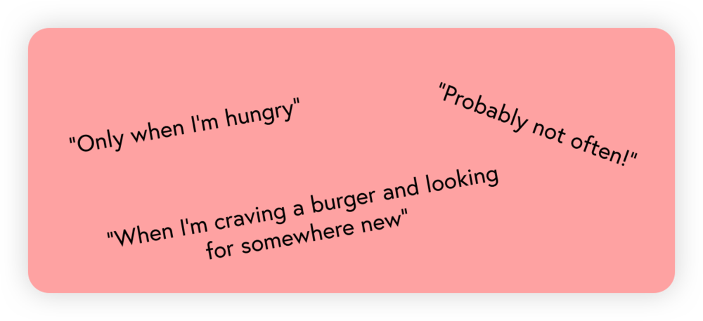
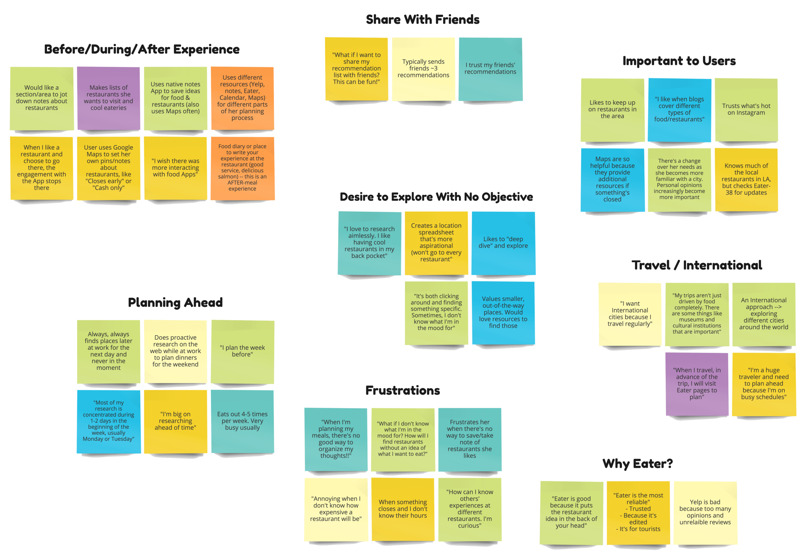
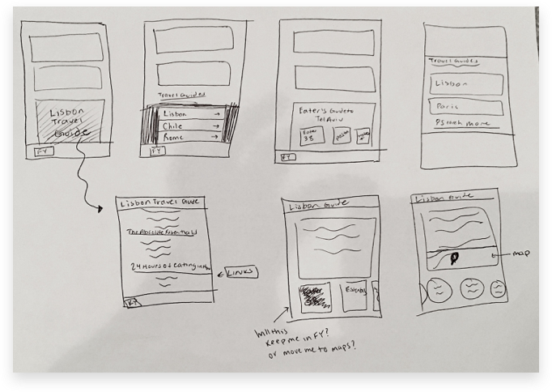
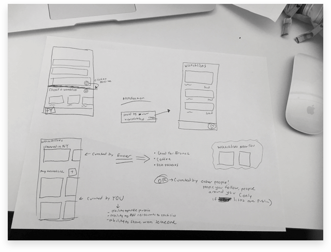
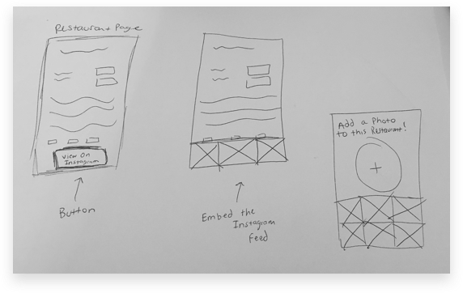
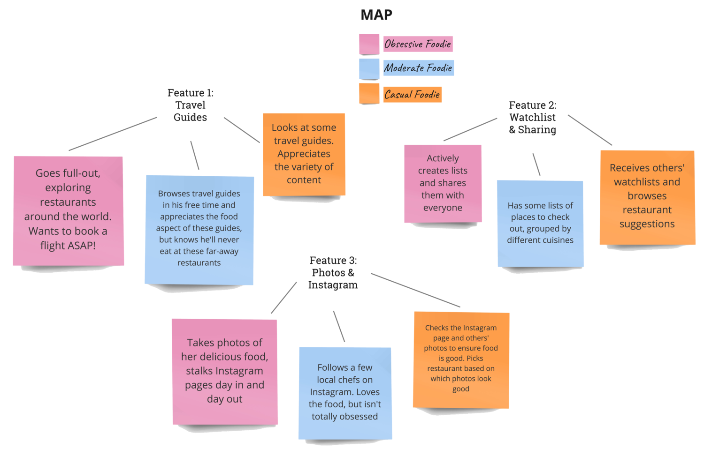
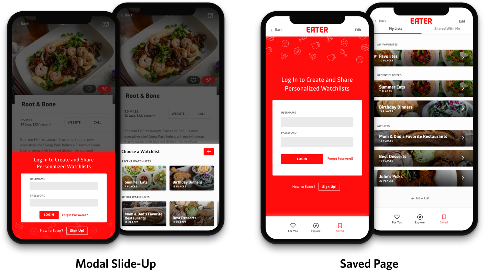
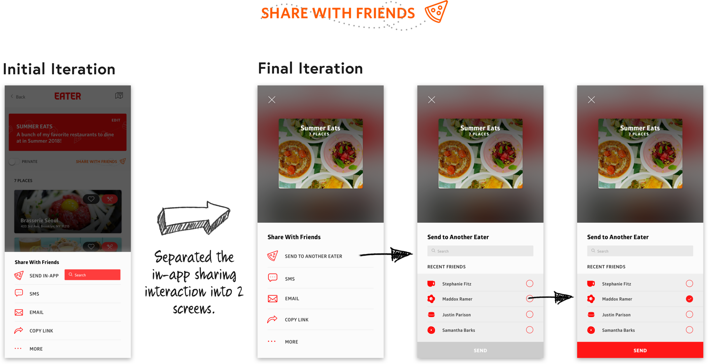

Context • The Problem • Research • Brainstorming • User Flow • Design Decisions • Final Flow • Prototypes • Takeaways
A feature allowing users to create personalized watchlists to share with friends and make food recommendations.
5 Engineers, 3 Designers, 1 Project Manager
Product Design Intern
6 Weeks, Summer 2018
In July of my summer internship at Vox Media Company, I moved to the Consumer Products team to help design a Progressive Web App for Eater, one of Vox's eight media brands. The Eater App offers restaurant recommendations to users based on location, cuisine types, and overall interest. Unlike dining apps like Yelp, content for Eater comes from trusted Eater editors who are physically immersed in the world's greatest food cities. I was tasked to create a new feature that will increase engagement and create more of a "food experience" within the app. Working closely with other designers and engineers, I designed a watchlist feature, which allows users to create and share an assortment of personalized collections of restaurants.
Final Screens
The Eater App (not yet launched) is a multi-surface product that helps users explore restaurants in their city and discover places to eat. The app currently consists of 3 tabs:
The 3 current pages
"If you’re looking for good food recommendations, how often and for how long do you see yourself utilizing and engaging with this app?"
By exploring the app and talking to potential users, I realized that users are limited to only cuisine and location explorations. They must enter the app knowing what they're in the mood for, which causes (1) low engagement with the app (you must enter with a goal) as well as (2) a limited opportunity for exploring.
To drive richness and increase engagement within the App, creating more of an experience.
On approaching this problem, it was important to gain a better grasp of how Eater users discover places to eat. We conducted 7 interviews with individuals who use Eater and had several conversations with casual Eater users. Our goals were to:
I then began to map our observations from user interviews in order to pinpoint the underlying themes and trends from research. Using countless post-its, markers, and a whiteboard, I constructed the affinity diagram below. As I presented this to my team, what really stood out to us was the fact that users open about 2-3 different apps (Notes, Maps, Google Sheets, etc.) from the time they research places they'd like to try to when they actually eat out.
Digital Version of Affinity Diagram
Creating the Affinity Diagram
Original Affinity Diagram
1.Eater users like to share and receive restaurant recommendations from friends.
2. Users typically plan meals out ahead of time.
"Earlier in the week, on Mon. or Tues., I will start looking through restaurants and look at different options. I like to plan which meals I am going to eat our versus cook."
3.Users like to stay organized and categorize their favorite restaurants.
"I create spreadsheets and use my native 'Notes app' to save ideas for food and restaurants. My lists are more aspirational, and I even have a restaurant bucket list!"
4.Multiple apps are used to decide where to eat out.
"I keep a ton of lists. A lot of the time I am on Eater I will email myself the articles. If I am on google maps, I keep notes in my cellphone."
5.Users really trust Eater's curated lists because the content is edited, so it's reliable.
To really get a feel for the target users, I always like to create fictitious personas so that I can jump into the users' shoes and really understand their needs, wants, thoughts, and priorities. The target users typically fall somewhere between this Foodie Spectrum:
I fall somewhere between Lucy and Jackson 😎
Obsessive Foodie (Sage)
Moderate Foodie (Jackson)
Casual Foodie (Lucy)
During an hour-long "brainjam" session with my manager, we brainstormed 3 different features that could solve the lack of engagement problem within the app and create this elevated Eater experience.
Seeing cities and hotspots across the world through different stacks of travel-related Eater content, such as "The Hottest Restaurants in Lisbon."
Low-Fidelity Sketches of the Travel Guide Feature
Creating personalized collections of lists, like "Brunch Ideas" or "Summer Meals," that users can interact with by creating and editing them, adding restaurants, and sharing with friends.
Low-Fidelity Sketches of the Watchlist Feature
Attaching user-generated photography and/or Instagram posts with each restaurant.
Low-Fidelity Sketches of the Photo Feature
Now that I brainstormed 3 potential features, I analyzed how each of the 3 foodies will use each feature. This helped me understand which feature will be most impactful for the users.
Next, I paired up each persona with a potential feature and went through user scenarios. The goal was to take these three feature ideas and create actual use-case scenarios on how foodies would iterate through the flow.
1. Watchlists ✕ The Obsessive Foodie
2. Travel guides ✕ The Moderate Foodie
3. Photo feature ✕ The casual Foodie
I initially loved the travel guides feature, as it elevates the app to a worldly, aspirational experience that combines food and travel. After sketching out some initial ideas, I learned we are limited by Eater's content and what's available in the API. Since we can't create our own travel content, this travel experience might not be as valuable.
I realized that with these constraints, we might have to go back to the drawing board. You can’t fall in love with any idea because it may not be the best solution.
Thus, I decided to move forward with the WATCHLIST FEATURE because:
How Instagram and Yelp Execute their "Collections" feature
Although different apps, Yelp and Instagram both have a fully-functioning "Collections" feature, where users can create their own unique lists/folders of photos (Instagram) and local businesses (Yelp). While analyzing how Yelp and Instagram execute their "Collections" feature, two things stood out to me that I wanted to emulate in Eater:
After understanding the content requirements as well as the three different pages and their hierarchy, I explored different modals that will pop up as users add a restaurant to a watchlist.
Medium-Fidelity "Add to Watchlist" Explorations" feature
Explorations C, D, & E felt more natural with desktop, and D & F did not give enough priority to the image. Also, E had too small scrolling space, and A & E had no distinction between recent and non-recent watchlists.
Thus, I decided to pursue option B because the large containers prioritize the image, and "Recent Watchlists" offers quicker access to more commonly used watchlists.
Once a restaurant is added to a watchlist, users can then view their personal watchlists in the "Saved" page.
Medium-Fidelity Explorations for the Saved Page
Tradeoffs:
A — Cannot fit enough watchlists on the screen; too much scrolling.
B — Image avatars are too small (not enough emphasis on the picture); too much room filled up by unnecessary Watchlist metadata.
C — Can fit a lot of watchlists at a time; visual element is successful.
D — Not enough emphasis on the picture; filters seem useful, but are in fact unnecessary.
E — No visuals (uncompelling and isn't enticing to users.)
As a result, I chose option C. The narrow shape affords easier scrolling, fitting more Watchlists on the screen at a time. Additionally, the narrow shape with the right-facing arrow is helpful for the user's mental model (skinny watchlist opens up into thicker restaurant containers).
Clicking on a Watchlist brings the user to this watchlist details page, which contains the watchlist title card on the top (title, details, settings) and a list of all the watchlist's restaurants. I explored a bucket view (A) and a list view (B).
Medium-Fidelity Explorations for the Watchlist Page
Deciding between the two explorations, I landed on option A because of the successful visual element. Images are what we want to prioritize, as the zoomed-in photos offers this emotional, mouth-watering connection to the food, making users want to dive into the experience. With the small thumbnail photos in B, users are not able to see enough of the food for it to be useful.
By clicking on a particular restaurant, users are brought into a deeper watchlist view. Think Spotify playlists — you can view the overall playlist details and all the songs in it (the watchlist page), and you can also surf through the playlist by clicking on a song and swiping left/right (these restaurant pages).
Medium-Fidelity Explorations for the Restaurant Page
I asked users which exploration was best for conveying that they are within a watchlist, swiping through the different restaurants. Users favored A & B because the red watchlist title card lets you have top-level access to the watchlist from within — it offers a sense of hierarchy. Between A & B, I decided to pursue option B because it is easy to see that you can swipe horizontally.
Through user testing and several team meetings, I continued to iterate on the designs, shifting to high fidelity.
Revisions:
With this Watchlist feature, there is value proposition for a logged-in experience. I created this flow chart to figure out when the app should ask users to log in / sign up.
Since there are 2 entry points to view/edit Watchlists, I decided to design two login screens — a full-screen version and a slide-up modal. This way, when a user is not signed in wants to add a restaurant to a watchlist, they won't be transferred to the saved page, but a login modal will slide up over the restaurant page, pictured below.
Login Interactions
My intention was to always tie the login experience with an action (adding restaurant to a Watchlist), so that logging in doesn't seem like an annoyance to the user, but adds to the overall personalized experience.
I chose red as the login screen background because it makes this easy red/white dichotomy of red background = logged out, and white background = logged in.
Another interaction with this feature is the ability to share watchlists with friends via email, text, or sending in-app. I explored how the screens will look when a user clicks "Share with Friends."
First & Final Iterations of "Sharing with Friends" Interaction
In designing these screens, I initially thought it'd be simpler and more intuitive to allow the user to search for a friend's username in-line. I tested this out using paper prototypes and realized that users were confused with in-line search. They asked, "Where would I be taken when I search for a friend's name? What if I want to send a watchlist to more than one user at a time?"
With this confusion, I decided to separate this interaction into 2 screens. When users click "Send to Another Eater," they are transported to an Instagram-like page that allows them to search for other Eaters (friends). This alternative feels less cramped, and including 'Recent Eaters' is much more convenient.
Final Flow of the Watchlist Feature
Final Flow of "Share with Friends"
You can interact with the two prototypes by clicking on the Watchlist Flow or the Login Flow below:
This project helped me understand that design must always be intentional. All design decisions must be backed up by reasoning, and just because something looks aesthetically beautiful doesn’t mean it’s the best solution to your problem. The Eater App is planned to launch this fall, and the designs of this watchlist feature this will be implemented in the minimum viable product.
{kind=link}
{kind=link}
{kind=link}